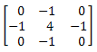
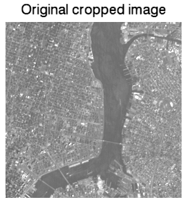
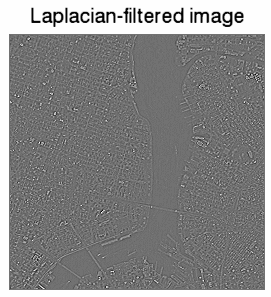
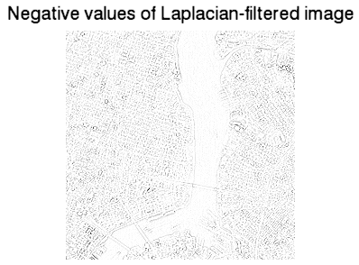

A Laplacian filter is an edge detector used to compute the second derivatives of an image, measuring the rate at which the first derivatives change. This determines if a change in adjacent pixel values is from an edge or continuous progression.
Laplacian filter kernels usually contain negative values in a cross pattern, centered within the array. The corners are either zero or positive values. The center value can be either negative or positive. The following array is an example of a 3x3 kernel for a Laplacian filter.

The following example uses the
CONVOL
function. This example data is available in the
examples/data
directory of your IDL installation. The code shown below creates the following three images, each displayed in separate windows.
 

Copy the entire code block and paste it into the IDL command line to run it.
; Select the file.
file = FILEPATH('nyny.dat', SUBDIRECTORY = ['examples', 'data'])
orig_imageSize = [768, 512]
; Use READ_BINARY to read the image as a binary file.
orig_image = READ_BINARY(file, DATA_DIMS = orig_imageSize)
; Crop the image to focus on the bridges.
croppedSize = [256, 256]
croppedImage = orig_image[200:(croppedSize[0] - 1) + 200, $
180:(croppedSize[1] - 1) + 180]
; Display the cropped image.
im01 = IMAGE(croppedImage, $
TITLE = 'Original cropped image')
; Create a kernel of a Laplacian filter.
kernelSize = [3, 3]
kernel = FLTARR(kernelSize[0], kernelSize[1])
kernel[1, *] = -1.
kernel[*, 1] = -1.
kernel[1, 1] = 4.
; Apply the filter to the image.
filteredImage = CONVOL(FLOAT(croppedImage), kernel, /CENTER)
; Display the resulting filtered image:
im02 = IMAGE(filteredImage, $
TITLE = 'Laplacian-filtered image')
; Display only the negative values (ridges) within the image.
im03 = IMAGE(filteredImage < 0, $
TITLE = 'Negative values of Laplacian-filtered image')